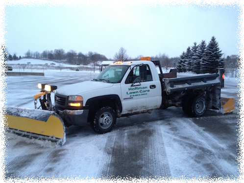

Winter Services:
- Plowing.
- Salting.
- Sidewalk Snow Removal.
- Snow Relocation.
- 24-Hour Snow Management.
- Emergency Service.
- Winter weather presents a unique challenge for business owners. Access to your property, the appearance of your facility, and even your customers' safety all depend upon Mother Nature's whim. Hoffman Lawn Care snow plowing service is the one you can count on to have walkways, driveways, roadways and parking lots clear and safe. We limit the volume of work per each truck, in order to assure adequate time for completion. This assures that your property gets the attention it deserves.
- Each Hoffman Lawn Care driver is trained on their route prior to the first snowfall. In fact, each driver personally installs their own marker stakes to assure the safety of curbs, turf, sidewalks and other landscaping that is often destroyed by careless operators.
